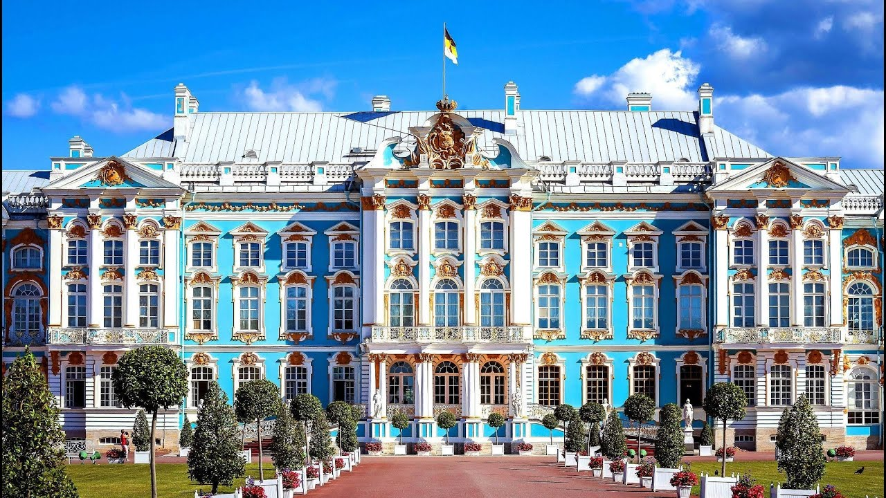
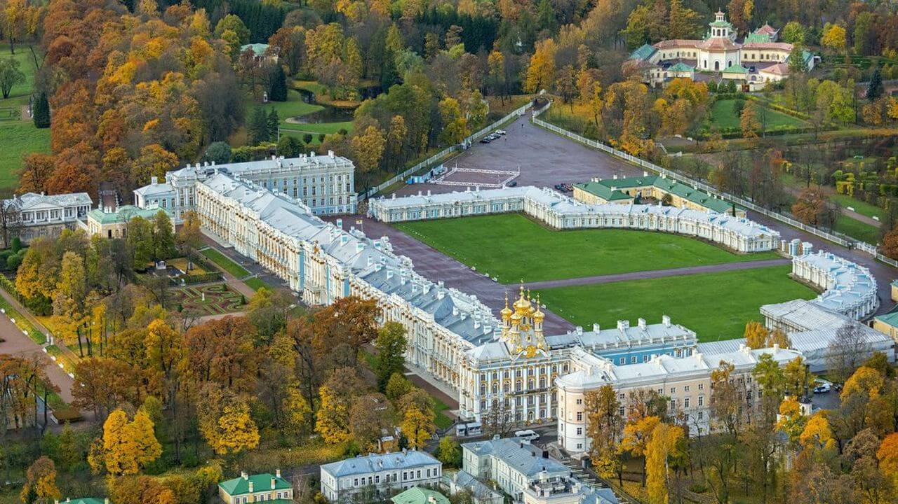
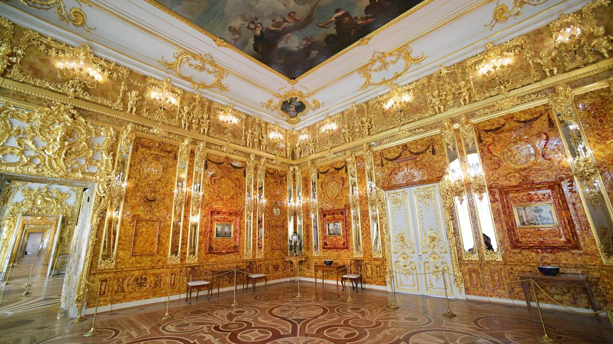
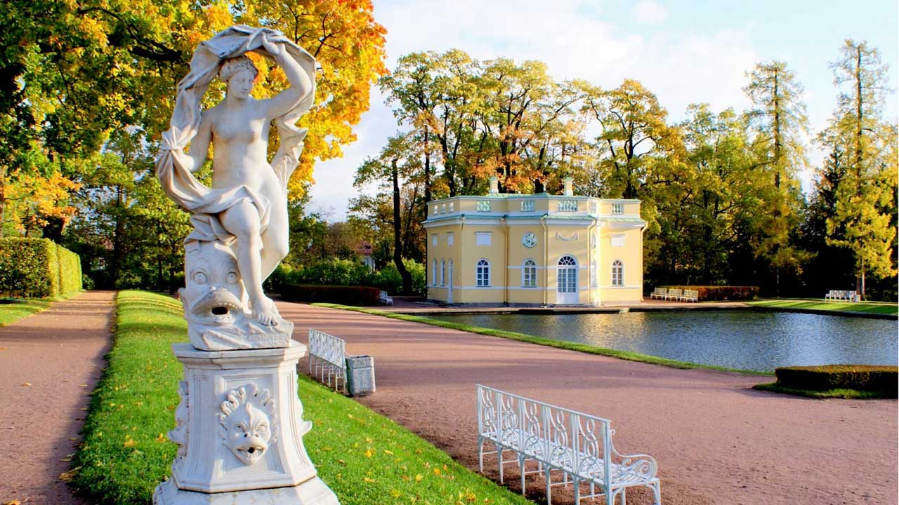

Приглашаем школьников посетить увлекательные экскурсии во Дворцах и парках Царского села! У нас вы найдёте разнообразные программы, которые подойдут как для уроков истории, так и для развлекательных квестов. Наши гиды расскажут вам об истории города, его известных жителях и культурных традициях. Вы сможете прогуляться по живописным паркам, посетить дворцы и музеи, а также узнать много нового о жизни великих людей, связанных с этим местом. Для самых маленьких у нас есть специальные программы с аниматорами и играми. Не упустите возможность провести время интересно и познавательно вместе с нами! Забронируйте экскурсию прямо сейчас на нашем сайте или свяжитесь с нами по телефону.
Откройте для себя историю одного из самых красивых дворцов России, окутанную легендами и тайнами. Наши опытные гиды проведут вас по залам дворца, рассказывая о жизни и быте императрицы Екатерины II и её окружения. Вы сможете увидеть знаменитые Янтарную комнату и Камеронову галерею, а также узнать о влиянии европейской культуры на архитектуру дворца. Для индивидуальных туристов есть возможность задать тему и маршрут, выбрать удобное время начала экскурсии, заказать трансфер и обед. Забронируйте свой визит на нашем сайте или свяжитесь с нами по телефону.
Иностранные туристы приезжают в Царское село, чтобы ознакомиться с Екатерининским дворцом, бывшее летней императорской резиденцией 3-х российских царствующих государынь — Екатерины I, Елизаветы Петровны и Екатерины II, и Александровским дворцом — бывшей резиденцией последнего российского императора Николая II и его семьи. Кроме интерьеров, интерес представляют пейзажный Английский парк, парк с Китайской деревней, Белой башней и другими архитектурными сооружениями. При бронировании укажите язык, на котором хотите получить экскурсионное обслуживание, и необходимость трансфера.